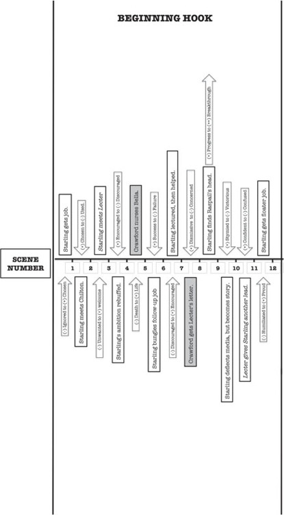
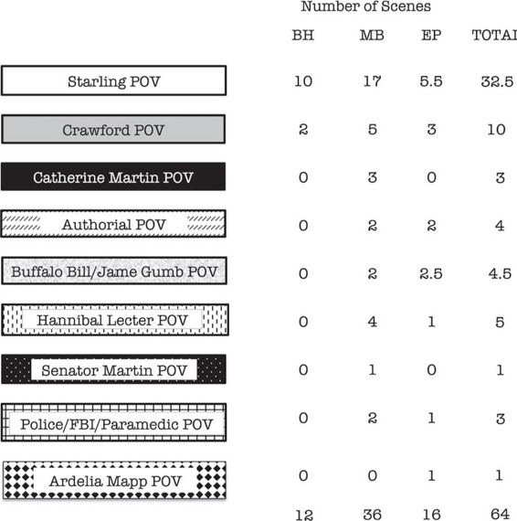

So, after I’ve combined the Spreadsheet info with the Foolscap for the Beginning Hook of the novel, which comprises the first twelve scenes, the horizontal axis should look like the diagram on the next page.
You’ll notice a couple of things.
1. Ten of these first twelve scenes are written from Clarice Starling’s point of view (again, I’ve used the information we wrote down in The Story Grid Spreadsheet), while two are from the point of view of Jack Crawford. Thomas Harris wisely made sure that the reader will not get too distracted in the Beginning Hook. The reader needs to bond immediately with the protagonist Starling, or the rest of the novel won’t work. But Harris also knew that thematically he needed to establish “impending death” early on so that the reader wouldn’t shudder and abandon the book when things got bloody. He does this by using Crawford’s ailing and comatose wife Bella as the device to signal to the reader that the Story is going to go to the limits of human experience. Bella’s unconsciousness lurks over the entire novel until scene 50 when she finally dies and Starling now has her full faculties available to deal with Buffalo Bill. Plus the dying wife element really softens Crawford as Starling’s manipulative mentor. Without Bella, Crawford would come off as a real asshole.
2. Scenes 3 and 11 have italicized type describing the events. I’ve put italic type here to designate the times when Starling and Lecter meet one on one. The Lecter interview scenes are brilliant. But the reader still “sees” the scene through Starling’s point of view. To be able to immediately go back and see when they occur and how they evolve shows just how carefully Harris constructed the Story.
3. The Story events in scenes 5 and 8 are shaded boxes. The shaded boxes indicate when Thomas Harris has shifted the point of view to Jack Crawford. So all scenes in the novel that are from the point of view of Jack Crawford will be in shaded boxes.

Harris will use eight other points of view. Here is that box again that shows you the others as well as the number of scenes each POV has in the Beginning Hook (BH), Middle Build (MB) and Ending Payoff (EP) of the book.

Not only can we track the progression of Story events and shifts in values scene by scene in The Story Grid, we can also track the progression of the global Genre values. We do this by moving from scene to scene on our Story Grid and evaluating the state of the global value at stake in each scene. Is it positive or negative in relation to the scene that came before it? We’ll put a dot on the grid on the vertical y-axis, corresponding to the scene based on the movement of the global value at the end of that scene.
Remember that the serial killer life value in The Silence of the Lambs moves from Life to Unconsciousness to Death to the fate worse than death (Damnation) and the disillusionment internal worldview value moves from blind belief to justified belief to doubt to disillusionment. We’ll mark those levels of positive and negative on our Story Grid alongside the y-axis so we don’t forget.
We can use the vertical axis of our graph paper to track how these global values are moving.
So to begin, let’s define the area above the horizontal line as Positive in global value and below the horizontal line as Negative in global value. Let’s designate the Life value with a solid line and the Worldview value with a dashed line. With these definitions in mind, let’s walk through the progression of global values in the Beginning Hook.
The EXTERNAL GENRE VALUE “LIFE” starts at the most positive for Clarice Starling at the very beginning of the novel. She’s got her shit together. As an FBI trainee, she’s on her way to reaching her goal of becoming an FBI agent. Then she gets the call to see Jack Crawford.
In scene 1 (chapter 1) Crawford offers her the Inciting Incident “errand” to go and interview the most dangerous serial killer on earth. Now her “LIFE” value is threatened in the negative. She’s going to be putting her life in danger, and she has no idea how much danger, so the curve of her Life value descends. She’s acting without knowing just exactly what she’s gotten herself into, approaching unconsciousness.
Now let’s look at the Worldview value.
As Starling’s LIFE value in the EXTERNAL PLOT descends toward UNCONSCIOUSNESS, the INTERNAL GENRE VALUE “WORLDVIEW” ascends.
At the beginning of the novel, Starling’s worldview is filled with “illusion.” She’s ignorant of the ways of the professional world and thus vulnerable for manipulation. While some would argue that illusion is a positive outlook on life in that the individual is immersed in the powers of positive thinking, for our purposes, and for Harris’, this lack of knowledge is in fact a false positive.
And a false positive is in fact, negative.
I’m defining it as “Blind Belief.” And I’m giving it a negative charge.
Justified belief as I’m defining it will be evidence in the righteousness of a blind belief. In this case a particular institution, the FBI. Doubt however will have a negative charge as will ultimately disillusionment.
Let’s track the internal value for the Beginning Hook.
At the onset of the Story, Starling is clueless about the ways of the world…as represented by the FBI. She thinks that as long as she does what she’s told and does it well, she will move up in the FBI hierarchy. To pinpoint her illusion/naiveté more precisely, I think the notion of “blind belief” is most accurate. She goes on faith that the FBI’s fundamental concern is with maintaining law and order. And order means rules, appropriate conduct that must be adhered to in order to become part of the institution. And once inside the institution, Starling believes that there are clear steps that an agent takes in order to rise in the organization.
As the BEGINNING HOOK of the novel progresses, Starling becomes less and less naive just as her life faces more and more threats. Her external moves down the graph, while her internal moves up. She doesn’t know that Crawford is using her to get to Lecter until the smarmy Dr. Chilton assaults her with that possibility.
That revelation makes Starling even more confused about exactly what her errand is really about. Her blind belief is now in question. Meanwhile, she’s getting a serious lesson in the lack of gravitas her position as an FBI agent in training means. She’s losing her illusions and gaining understanding of her place in the world.
At the climax of the BEGINNING HOOK of the novel, you’ll see that the two values intersect. The climax comes in scene 12, chapter 10 when Starling is “rewarded” for her intrepid investigation of a clue proffered by Lecter. By following Lecter’s lead, she’s discovered a severed head of an unknown victim in the storage unit held by one of Lecter’s victims.
She’s also shown to be a capable agent when faced with media interference. So Crawford pulls her out of the Academy to accompany him on a trip to West Virginia. The fact that Starling is also from West Virginia is certainly not far from his mind either.
Another victim of Buffalo Bill has been found, which moves the life value across the dead zone.
On the worldview dashed line side of things though, Starling, just a newbie trainee, has moved up the ladder. She’s now joined the hunt for Buffalo Bill and Harris has completely hooked the reader. Her worldview has now shifted from blind belief to justified belief.
Obviously Crawford’s pulling her into a serial killer investigation when she is only a trainee is a huge deal. Even Starling isn’t sure why he’s is bringing her, but instead of deeply questioning his motives, she puts her head down and resolves to do the best job possible. She’s crossed the line from “blind belief” to “justified belief.”
She’s done what she’s been told and she’s done it well. So, as she expected previously based on blind assumption (Harris even makes a joke about the word “assume”), she’s being elevated in the FBI hierarchy based on what she perceives as merit.
Her worldview is now more informed and she’s now a believer in the way the FBI works.
Let’s take a short time out here and check in on THE MATH of the book. By my calculation, The Silence of the Lambs is 96,299 words. The end of the BEGINNING HOOK comes after TEN CHAPTERS/TWELVE SCENES and takes up 18,152 words, or 19% of the entire novel. Not exactly the 25% we use to estimate the length of a novel’s beginning in our 25/50/25 principle, but definitely in the general arena that we’ve been using as our yardstick for long form Story.